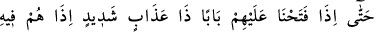

el-İrşâd’da der ki: “
(tazarru ve niyazda da bulunmuyorlar)” sözü,
kendisinden önceki kısmın mânâsını güçlendiren bir ara cümledir. Yâni Allah Teâlâ’ya
tazarru ve niyazda bulunmak onların âdetlerinden değildir, demektir.
77. En nihayet üzerlerine, azabı çok şiddetli bir kapı açtığımız zaman, bir de
bakarsın ki onlar orada şaşkın ve ümidsiz kalmışlardır!
“En nihayet üzerlerine, azabı çok şiddetli bir kapı” yâni âhiret azâbını “açtığımız
zaman, bir de bakarsın ki onlar orada” o azâbın içinde bütün hayırlar konusunda
“şaşkın ve ümidsiz kalmışlardır!” yâni biz onları ölüm, esaret, açlık ve diğer her türlü
mihnet ve sıkıntılara uğrattık. Ancak onların Hakk’a boyun eğdikleri ve İslâm’a
yöneldikleri görülmedi. Ebû Süfyân’ın ortaya koyduğu boyun eğmeye gelince, bunun
Allah’a boyun eğmekle ve yalvarmakla hiçbir ilgisi yoktur. Bu maksadı hâsıl olana
kadar bir tür boyun bükmekten ibârettir. Onun durumu, “
acıkınca
yalvarıp yakarır, doyunca da azar” sözüne uygun düşmektedir. Onların çoğu, âhiret
azabını görene kadar buna devam ederler. O zaman da ümidsiz ve şaşkın bir halde
kalakalırlar. Nitekim Allah Teâlâ şöyle buyurur: “Kıyametin kopacağı gün
günahkârlar (ümitsizlik içinde) susacaklardır.” (er-Rûm, 30/12), “Azapları
hafifletilmeyecektir. Onlar azap içinde kurtuluştan ümid kesmişlerdir.” (ez-Zuhruf,
43/75)
İkrime der ki: “Âyette geçen kapı, cehennem kapılarından bir kapıdır. O kapıyı
bekleyen dört yüz bin bekçi (hâzin) vardır. Onların yüzleri siyah, dişleri korkunç ve
gönüllerinden rahmet duygusu alınmıştır. Onlar oraya varınca Allah onlara bu
cehennemin kapısını açar. Allah’tan bizi ondan uzak kılmasını niyaz ederiz.
Vehb b. Münebbih der ki: “Beytü’l-makdis’de bin kandil yakılırdı. Tûr-i Sînâ’dan
devenin boynu gibi saf, akışkan bir yağ çıkardı. Eller dokunmadan bu yağ kandillere
dökülürdü. Gökten de beyaz bir ateş gelir ve kandiller o ateşle yakılırdı.
Kurban ve kandil yakma görevi, Hârun’un iki oğlu Şebr ve Şebîr’e âiddi. Onlara bu
kandilleri dünya ateşi ile yakmamaları emredilmişti. Bir gün acele edip kandilleri
dünya ateşi ile yaktılar. Bunun üzerine bir ateş düştü ve Hârun’un iki oğlunu yakıp
bitirdi.
Bir kimse Mûsâ (a.s.)’a bağırarak onu çağırdu. Musa (a.s.) duâ ederek geldi. Şöyle
diyordu: “Ya Rab, şüphesiz Hârun’un iki oğlunun benim yanımdaki yerlerini çok iyi
biliyorsun.” Bunun üzerine Allah ona şöyle vahyetti: “Ey İmran oğlu, işte bana isyan
ettikleri zaman ben dostlarıma böyle yaparım. Düşmanlarıma nasıl davranacağımı sen